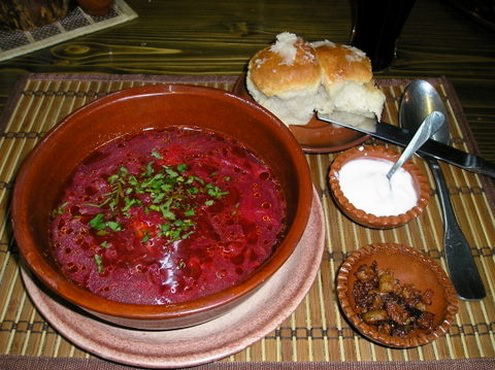

Type of Ukrainian foods
There is a huge amount of tasty Ukrainian food,
and it is well known for its amazing taste.
* One of the most popular food in Ukraine is called: borsh
As shown in the picture.
*The main ingrediants of this dish is beetroot which gives the red colour and amazing taste.
* Another type of food is called: Varenyiki
it is a made with a dough and meat balls inside.
